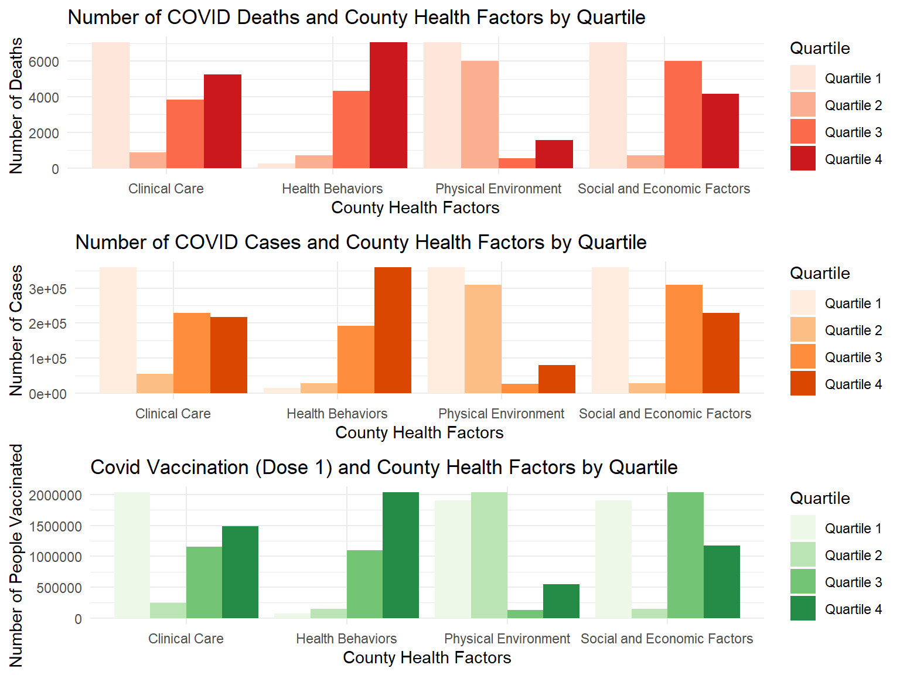

For our exploratory data analysis, we wanted to see if there is a pattern between health county rankings (health behaviors, clinical care, socioeconomic (SE) factors, and physical environment) and the number of COVID cases, deaths, and vaccinations. We divided the county health rankings into 4 quartiles based on ranks with quartile 1 having the best rankings and quartile 4 having the worst rankings.
eda1 =
comb %>%
rename("Clinical Care" = clinical_care_r,
"Physical Environment" = env_r,
"Health Behaviors" = health_beh_r,
"Social and Economic Factors" = ses_r) %>%
pivot_longer("Health Behaviors":"Physical Environment",
names_to = "rank_var",
values_to = "rank") %>%
filter(year == '2021') %>%
mutate(Quartile = case_when(rank < 17 ~ 'Quartile 4',
rank < 32 ~ 'Quartile 3',
rank < 46 ~ 'Quartile 2',
rank < 63 ~ 'Quartile 1')) %>%
mutate(Quartile = as.factor(Quartile)) p1 = ggplot(data=eda1, aes(x=rank_var, y=n_deaths, fill=Quartile)) +
geom_bar(stat="identity", position=position_dodge())+
scale_fill_brewer(palette="Reds") +
theme_minimal() +
labs(title="Number of COVID Deaths and County Health Factors by Quartile",
x ="County Health Factors", y = "Number of Deaths")
p2 = ggplot(data=eda1, aes(x=rank_var, y=n_cases, fill=Quartile)) +
geom_bar(stat="identity", position=position_dodge())+
scale_fill_brewer(palette="Oranges") +
theme_minimal() +
labs(title="Number of COVID Cases and County Health Factors by Quartile",
x ="County Health Factors", y = "Number of Cases")
p3 = ggplot(data=eda1, aes(x=rank_var, y=vax_dose1, fill=Quartile)) +
geom_bar(stat="identity", position=position_dodge())+
scale_fill_brewer(palette="Greens") +
theme_minimal() +
labs(title="Covid Vaccination (Dose 1) and County Health Factors by Quartile",
x ="County Health Factors", y = "Number of People Vaccinated")
grid.arrange(p1, p2, p3, ncol = 1)
From the results of the plots, we can see that there is a general pattern across all the COVID-19 outcomes (cases, deaths, and first dose of a vaccine) for the Health Behaviors Rankings. Counties with higher (worse) ranks show a higher number of cases, deaths, and first dose of vaccines. We will explore the variables that contribute to this pattern in our statistical analysis.